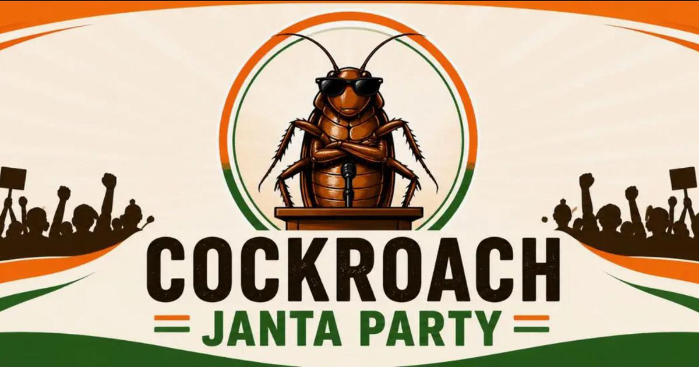

1. Satirical & Political Slogans
Motivation:-
- "Cockroach Janta Party: Invincible, Unstoppable, Unkillable."
- "The Ultimate Survivors of Democracy."
- "From the Darkest Corners to the Halls of Power."
- "Scuttling Forward to a Brighter Tomorrow."
- "Resilient Under Pressure (Even a Nuclear Blast!)."
- "Cockroach Janta Party: We don't just adapt, we thrive."
Party Manifesto Our Core Philosophy:-
- Dynasties fall, empires crumble, and political waves come and go—but we remain. The Cockroach Janta Party represents absolute resilience, unmatched adaptability, and the sheer will to survive any political climate or economic storm. We don't just adapt to the system; we outlast it.
Key Pillars of Our Platform:-
- Total Resilience: Policies designed to withstand any crisis, market crash, or literal nuclear blast.
- Ubiquitous Presence: Dedicated to being everywhere, in every nook and corner, serving the grassroots directly.
- Unrivaled Adaptability: Quick on our feet, highly resourceful, and ready to thrive under any conditions.